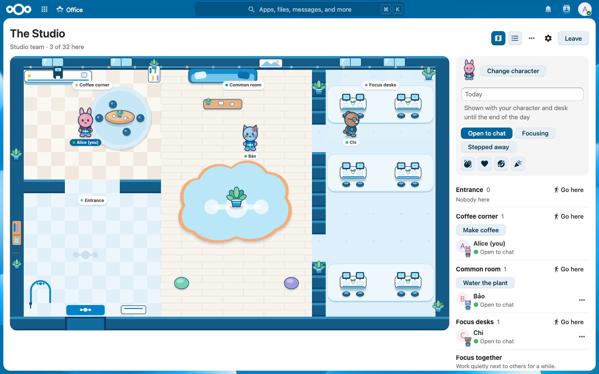

Know who's here
See the people in your office and walk over to them. Nobody appears just because they opened a link.
A little office for Talk conversations
Give a Talk group conversation its own office. Step in as a character, walk over to say hi, and wave or share a coffee without leaving the chat.
For Nextcloud 35. Free and open source.

Inside Talk
Open the office from a message menu. Share it in chat, see who's there, and enter right in the conversation.
When a call starts, the office shows who's in it. Open the full office to join.
What happens inside
See the people in your office and walk over to them. Nobody appears just because they opened a link.
Wave, make coffee, focus together, or knock to ask “got 2 minutes?” before a call.
Offices also work for Teams and groups. Open them from Team pages, search, or the Dashboard. Team rooms show shared boards and folders.
See it in motion
Recorded in a running Nextcloud instance with test accounts.
Good to know
Opening an office does not place you inside. Access follows the Team, group, or conversation. Virtual Office does not keep a history of visits or movement.
Desks, Today notes, knocks, and other optional features keep the data they need. The admin guide explains when it is removed.